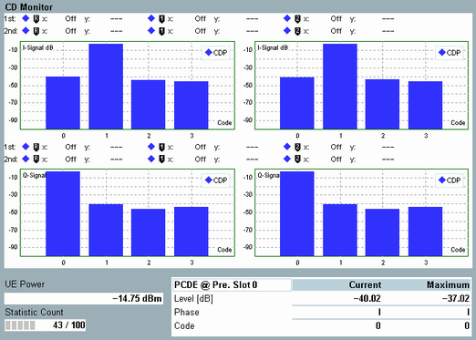

The code domain monitor displays the code domain power (CDP) and code domain error (CDE) for all code channels, measured in the preselected slot. The code domain measurements are not relevant for QPSK-modulated signals (see parameter "UL Configuration").

Separate bar graphs are available for the I-branch and the Q-branch of the signal. For each bar graph, the displayed trace type (CDP and/or CDE) can be selected. The example above shows the bar graphs of a half-slot measurement. Both the results for the first half-slot (left) and the second half-slot (right) are displayed. For a full-slot measurement, the view contains two bar-graphs instead of four.
The results are determined assuming a selectable uniform spreading factor (SF) for all channels (see parameter "CDP Spreading Factor"). The number of displayed bars (code channels) corresponds to the selected SF. A signal component with a spreading factor smaller than the selected SF occupies several adjacent bars.
The table below the bar graphs provides information concerning the peak code domain error (PCDE). In addition to the PCDE value (level in dB) the phase (I-Signal or Q-Signal) and the code of the channel where the PCDE was measured are displayed in the table. For a PCDE measurement according to 3GPP TS 34.121, the spreading factor must be set to 4.
For additional information, refer to "Common View Elements".